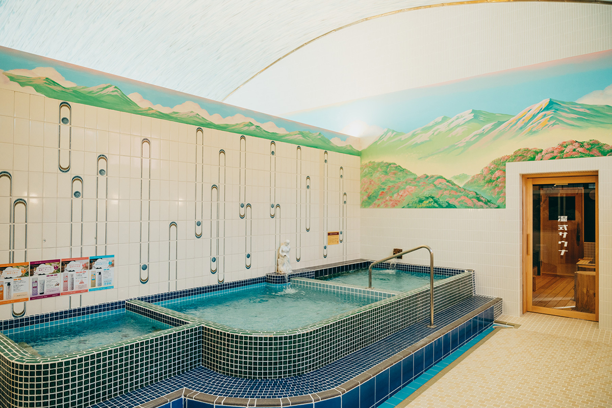
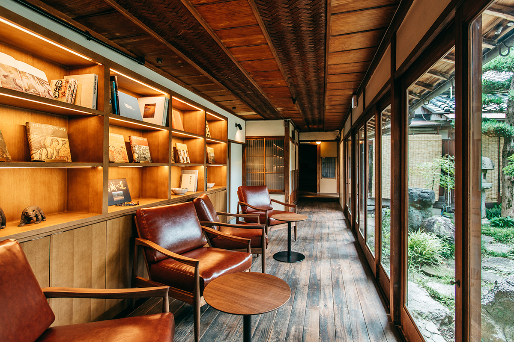
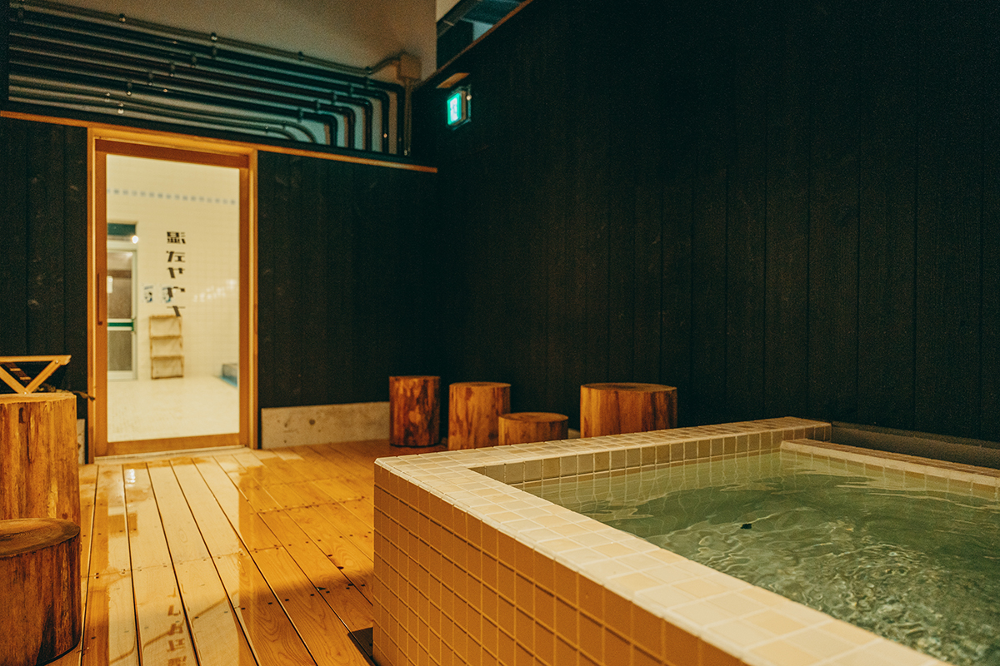
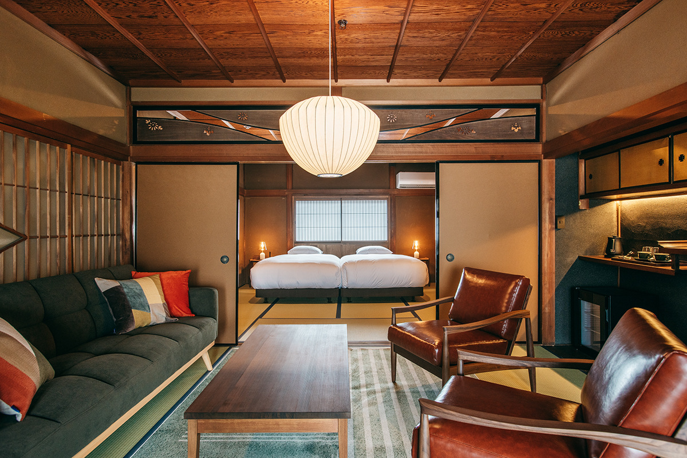
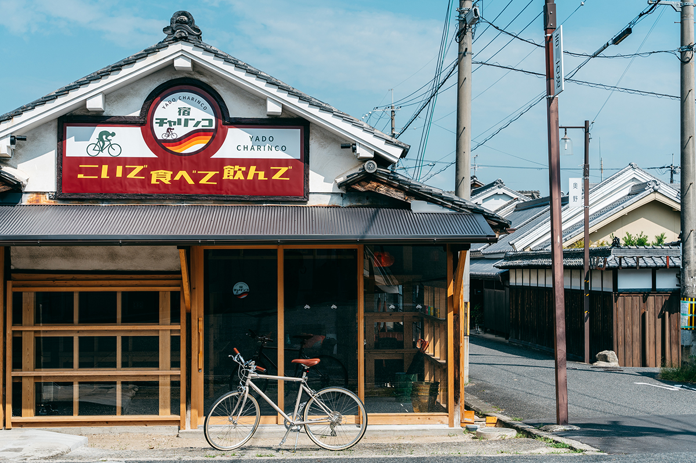
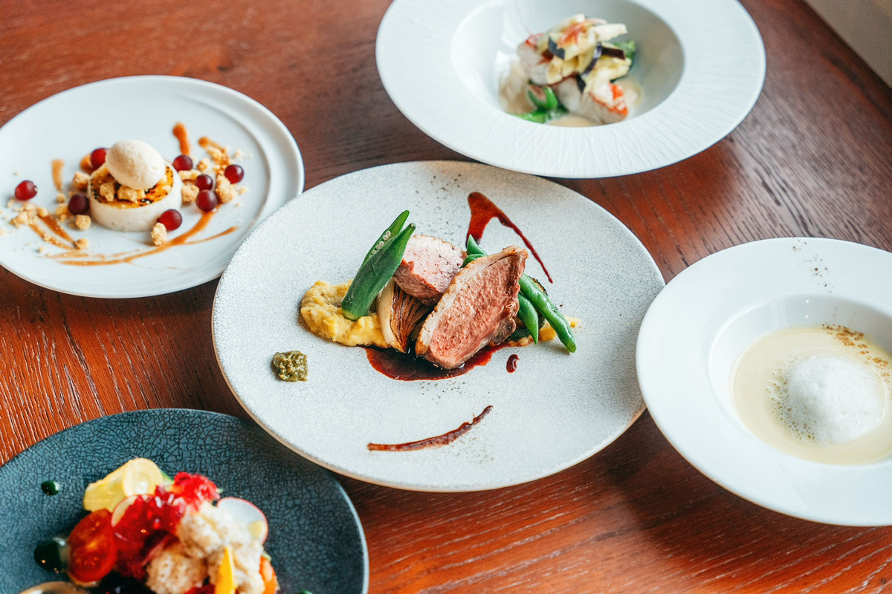

Префектура Нара · Госэ · гостиница
GOSE SENTO HOTEL: ночь в старом квартале Госэ, баня с 1916 года и ужин из местной утки

В Госэ гостиница разложена по всему старому кварталу: спят в одном доме, ужинают в другом, моются в третьем. Четыре отреставрированных дома вместе составляют GOSE SENTO HOTEL, и жить здесь значит на пару дней стать жителем городка.
Город
Квартал, который помнит Эдо
Госэ лежит в центральной и южной части префектуры Нара, у подножия гор, которые с древности считались обителью богов. Здесь родился Эн-но Гёдзя, живший в VII веке основатель сюгэндо, японской традиции горного подвижничества. Когда-то паломники очищались в здешних источниках и уже потом уходили в священные горы.
Старый квартал Госэмати сложился в начале периода Эдо, в XVII веке, как город при резиденции местного правителя. Речка делит его надвое: на западном берегу жили купцы, на восточном стоял квартал вокруг храма. Улицы почти не изменились с тех времён: по земельным планам эпохи Эдо здесь можно ориентироваться до сих пор, а вдоль них тянутся ряды старых домов.

Баня
«Госэ Такараю»: сэнто с 1916 года
GOSE SENTO HOTEL устроена по принципу «сон, еда и баня отдельно». Атмосфера квартала держится на раннем Новом времени, но в ней много и от эпохи Сёва, середины прошлого века. Сердце гостиницы составляет общественная баня «Госэ Такараю». По преданию, её открыли в 1916 году. Для горожан она была местом встреч, но в 2008 году ей пришлось закрыться.
После ремонта баня снова работает. Старые ванны оставили на месте, а рядом появились финская сауна, открытая купель с холодной водой и место для отдыха на свежем воздухе. Получилось одновременно знакомо и по-новому.

Где жить
Два дома с разным характером
Для ночлега здесь два дома, и они совсем не похожи друг на друга. Гостиница, которая с августа 2026 года называется UHN Nara Mannenhitsu Hompo (раньше RITA Gosemachi), устроена в бывшем главном магазине «Морисон», японской марки перьевых ручек, основанной в эпоху Тайсё, в 1910–1920-х годах. Коллекционеры до сих пор ищут её ручки как редкость. В классических комнатах со следами истории тихо и спокойно.

Тем, кто путешествует активно, подойдёт «Ядо Тяринко». Дом раньше был велосипедной мастерской, и ретро эпохи Сёва здесь чувствуется во всём. Есть номера, где можно оставить велосипед рядом с собой, и прокат велосипедов. Днём катаются по окрестностям Госэ, которые с древности почитали как святую землю, вечером смывают усталость в «Госэ Такараю» и знакомятся с местными жителями.

Ужин
«Ёсёкуя Кэмури»: Госэ на тарелке
Местная культура здесь и в еде. Молодой шеф ресторана «Ёсёкуя Кэмури» готовит из того, чем славится Госэ: из утки, главного местного продукта, и из сезонных овощей префектуры Нара, выросших на чистой воде. Его кухня рассказывает о климате, истории и жизни города. Ужин в зале с ностальгической обстановкой стоит запить сакэ из Нары.

Время в Госэ течёт медленно: местные жители, их вещи и их дела понемногу наполняют тебя изнутри.
В 2023 году ночь с ужином и завтраком стоила от 30 300 иен в UHN Nara Mannenhitsu Hompo и от 18 200 иен в «Ядо Тяринко», с налогом и сервисным сбором.
GOSE SENTO HOTEL
- Адрес
- префектура Нара, Госэ, Ниси-мати, 1069 (UHN Nara Mannenhitsu Hompo); Камогути-тё, 1087 («Ядо Тяринко»); Микуни-дори, 2-361-5 («Госэ Такараю»); Нисикасива-тё, 1296 («Ёсёкуя Кэмури»)
- Телефон
- +81 745-49-0854
- Номера
- UHN Nara Mannenhitsu Hompo 4, «Ядо Тяринко» 4
- Цены / Вход
- ночь с ужином и завтраком от 30 300 иен (UHN Nara Mannenhitsu Hompo) и от 18 200 иен («Ядо Тяринко»), с налогом и сервисным сбором; ужин европейский, завтрак японский
- Заезд / выезд
- заезд с 15:00, выезд до 11:00 («Ядо Тяринко» до 10:00)
- Как добраться
- 5–10 минут пешком от станции Кинтэцу-Госэ или станции JR Госэ; на машине около 5 минут от съезда Госэ скоростной дороги Кэйнава
- Сайт
- gosemachi.com